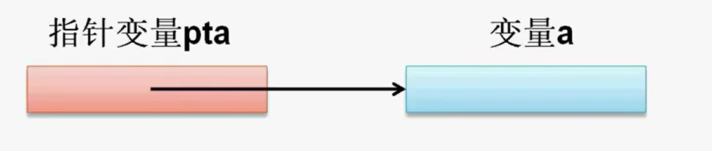
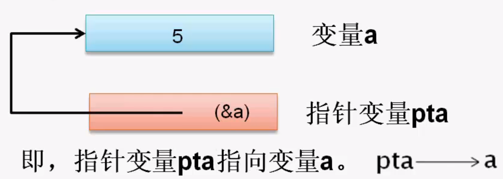

变量与指针变量
- 变量有地址，指针变量可以存放变量的地址
- 当指针变量中存放某个变量的地址后，我们就说该指针变量指向这个变量
- 如：指针变量pta指向变量a

使用指针变量的步骤
- 定义指针变量
即给指针变量分配内存空间。 - 对指针变量赋值
即让指针变量指向某对象，该对象可以是变量、数组、函数或动态分配的一块内存空间等。 - 通过指针变量间接访问所指向的对象。
定义指针变量
- 指针变量的定义格式：
数据类型 *变量名 - 其中：
*——是指针类型变量的标志符号。
变量名——为指针变量名（构成同标识符）。
数据类型——为指针变量所指向变量的数据类型。
数据类型 *——表示指针类型。 如： 定义一个指向字符类型的指针变量pch。
1
char *pch ///pch是一个字符型指针变量
注意： 变量pch的数据类型为char *，而不是char
- 说明： 定义一个指针变量，系统将为该指针变量分配一定大小的内存。
指针变量的初始化
在定义指针变量的同时为指针变量提供初值。
如：int a=5,*pta=&a;
其中，a的初值为5，pta的初值为变量a的地址。
这时，pta与a的关联如下：

使用赋值语句赋值
上述语句中：int a=5,*pta=&a;
与下面的语句的功能是等效的。1
2
3int a,*pta;//先定义变量
a=5;//使用赋值语句提供初值
pta=&a;//使用赋值语句提供初值
定义多个指针变量
例如：double *p1,*p2;
定义了2个双精度型的指针变量p1和p2，它们只能指向double型变量。
变量p1和p2的类型为：double
注意：定义多个指针变量，每个指针变量前必须有字符。
通过指针变量间接访问所指向的变量
- 指针类型中有2个特殊的单目运算符：&和*。
[1] & 取地址运算符。
[2] * 指针运算符（也称为间接访问运算符）`&变量名`//获取变量的内存单元地址
[3] 如果指针变量pta中存放着变量a的指针，则*pta表示pta所指向的变量即变量a。`*指针变量名` 或 `*指针常量`//表示该指针所指向的变量 例如1：
1
2
3int a=5,*pta=&a;
*pta=a+8;
cout<<a<<","<<*pta<<endl;输出结果为13，13
例如2：
1
2
3
4
5
6int a,*p=&a;
cout<<&a<<endl;//a的地址 0x23fe4c
cout<<a<<endl;//a的值 5
cout<<&p<<endl;//p的地址 0x23fe40
cout<<p<<endl;//p的值 0x23fe4c
cout<<*p*<<endl;//p所指向变量的值 5注意： *p与(&a)等价，即就是a。p是一个指针变量，而&a是一个指针常量。
*注意： 指针变量的值一定是“地址”；指针变量所指对象的值不移动是“地址”。
使用指针变量时应注意
不要访问没有被初始化的指针变量。
如：1
2int*p;
cin>>*p; //这样使用指针是危险的由于p变量未初始化，p中可能存在一个不确定的单元地址，这时的输入将会改变原存储单元的值，造成结果混乱。
指针变量可以有空指针值，即该指针变量不指向任何变量。
常用符号常量NULL表示空指针值，其实NULL代表的值是整数0.编译系统约定0号单元不存放有效数据。